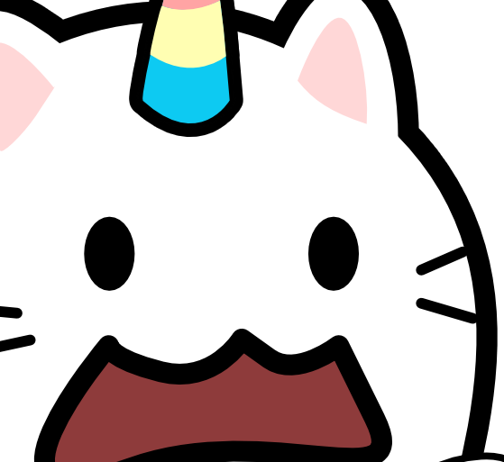
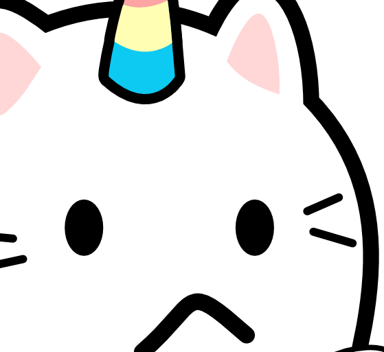
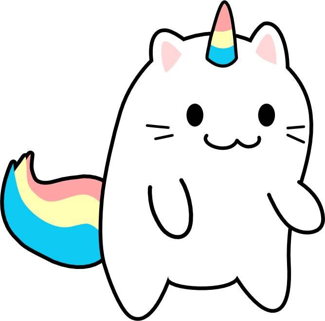

|
Tête.
|
  |
|---|---|
|
Corps.
|
 |
| Race. | Caticorn. |
| Genre. | Masculin. |
| Origine du milieu humain. | Française. |
| Empreinte signature. | Mathématique. |
| Age. | Espace et Temps. |
| Liens. | Audius, YouTube, instagram. |
| Pseudo d'artiste | Clestial Musepi |
| Profession | Compositeur / Sound design / Mixage / Philosophe (vision conceptuelle) |
| Sexe | Masculin |
| Situation | Autodidacte |
| DAW (Digital Audio Workstation) | ReaperDaw |
| Équipements |
|
| Style musical | Dodecaphonique / Sérialisme / Pseudo Jazzy / Off-Key On-Key / Glitch hop / Cowboy vibe / Rock jazzy / Chaos vibe / Mathématique / Rock / Métal |
| Présentation de l'artiste | Je suis un compositeur amateur en herbe. |
| Public cible | Amateurs de musique électronique, labels spécialisés en musique expérimentale, compositeur. |
| clestialmusepi@gmail.com | |
| Twitter (x) | https://x.com/Clestialmusepi |
| https://www.instagram.com/clestialmusepi/ | |
| Paypal | Faire un don |
| copyright | © 2025 Clestial Musepi. All rights reserved. |